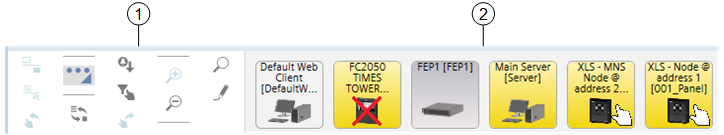

Node Map
The Node Map presents control panels and system components as graphic symbols that provide a quick status summary. In fact, the graphic symbols show the category color of the most important event, and blink when an event acknowledgement is required. In addition, a red X sign on the symbol represents a communication fault or disconnection from the control panel or system component. A toolbar displays on the left-hand side and provides for filtering, sorting, and grouping commands. You can click a symbol to operate it with the toolbar commands and double-click it to select it and display its information in the work area.
For more details about available actions, see Working with Node Map.

Node Map | ||
| Name | Description |
1 | Node Map toolbar | Contains the Node Map control commands. |
2 | Node Map symbol | Shows the category color of the most important event, and blinks when an acknowledgement is required. A red X sign represents a communication fault or disconnection. |